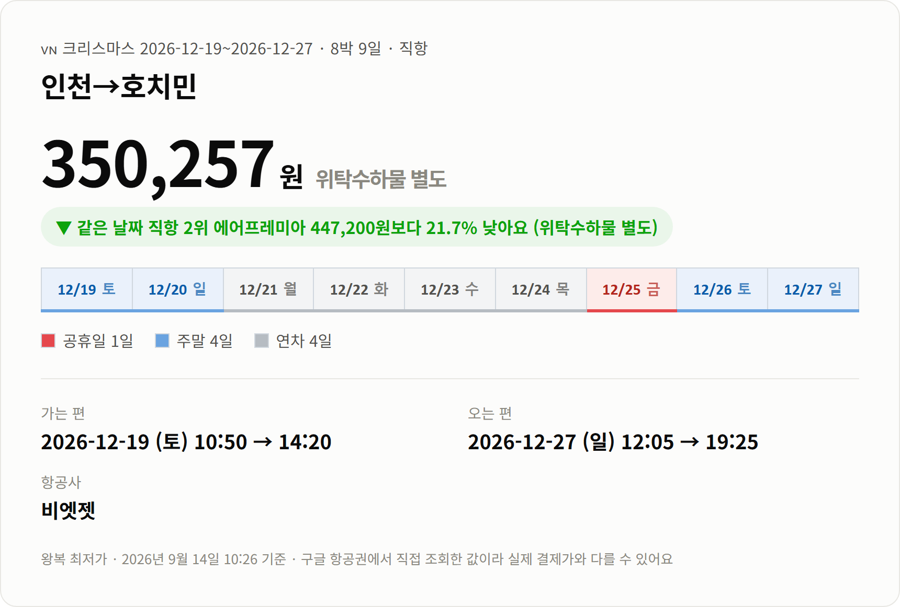
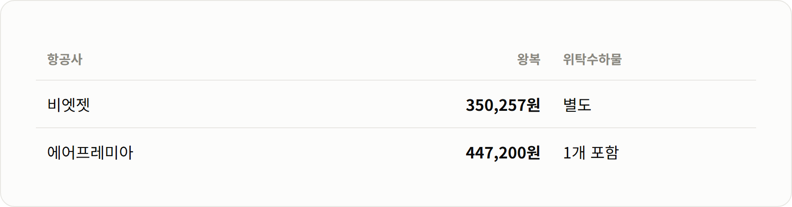

연차 4일로 호치민 8박 9일, 성탄절 앞뒤로 다녀오는 일정이에요.
안녕하세요 :)
12월 달력을 보면 25일 성탄절이 금요일이에요.
그 앞 월요일부터 목요일까지 나흘만 연차를 내면
12월 19일 토요일부터 27일 일요일까지 아흐레가 비어요.
긴 연휴에 따뜻한 곳을 찾다가 호치민을 봤는데,
직항으로 낮에 도착해서 낮에 돌아오는 일정이 괜찮은 가격에 나와 있더라고요.
호치민 항공권은 비엣젯 직항 왕복 350,257원(위탁수하물 별도)이에요.

가는 편: 12/19(토) 10:50 인천 → 14:20 호치민 · 비엣젯
오는 편: 12/27(일) 12:05 호치민 → 19:25 인천 · 비엣젯
일정: 8박 9일 · 직항
연차: 12/21(월)~12/24(목) 4일
토요일 오후 2시 20분에 도착하니 첫날 저녁부터 시내를 다닐 수 있고,
돌아오는 날도 낮 12시 5분 출발이라 새벽에 공항으로 갈 일이 없어요.
시각은 각 공항 현지 시각이에요.
[사진 자리] 호치민 사이공강 스카이라인
같은 날짜 직항에서 두 번째로 싼 곳은 에어프레미아예요.

비엣젯이 96,943원, 21.7% 낮아요(위탁수하물 별도).
기내 수하물만 들고 가볍게 다니실 거면 비엣젯이 낫고,
부칠 짐이 있으면 수하물을 더한 금액으로 한 번 비교해 보세요.
12월 호치민은 건기예요.
평균 최고기온은 31도 안팎이고 습도는 74% 정도예요.
한국이 한겨울일 때 반팔로 다닐 수 있는 날씨라
공항에서 겉옷을 벗어 캐리어에 넣을 준비를 해 두시면 편해요.
낮에는 햇볕이 강하니 모자와 선크림은 챙기시고요.
호치민 자유여행은 1군 시내를 걸어서 먼저 익히고,
하루쯤은 메콩델타처럼 시내 밖으로 나가는 식으로 짜면 편해요.
응우옌후에 거리는 시청 앞에서 사이공강 쪽으로 곧게 뻗은 보행자 거리예요.
해가 지면 양쪽 건물에 불이 들어오고
거리 전체가 산책하는 사람들로 채워져요.
[사진 자리] 호치민 응우옌후에 거리
사이공 중앙우체국은 지금도 우체국으로 쓰이는 옛 건물이에요.
아치형 천장 아래 오래된 지도와 창구가 남아 있어서
시내를 걷다 잠깐 더위를 피해 들르기 좋아요.
[사진 자리] 사이공 중앙우체국 외관
8박 9일이면 메콩델타에 하루를 써도 여유가 있어요.
넓은 강줄기와 수로 사이로 배를 타고 들어가는 투어가 많고,
시내와는 전혀 다른 속도의 풍경을 볼 수 있어요.
베트남은 관광 목적이면 한국 여권으로 무비자 입국이 가능해요.
다만 체류 가능 일수나 여권 유효기간 조건이 바뀌기도 하니
출발 전에 공식 안내를 한 번 확인해 두시는 게 좋아요.
돈은 베트남 동을 써요.
큰 식당이나 호텔은 카드가 되고, 시장이나 길거리 음식은 현금이 편해요.
가격은 9월 14일 오전에 구글 항공권에서 직접 조회한 값이에요.
실시간으로 움직이는 값이라 예약하실 때는 달라질 수 있어요.